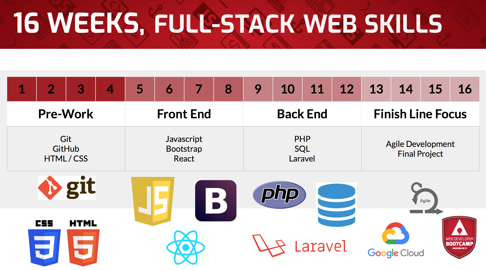
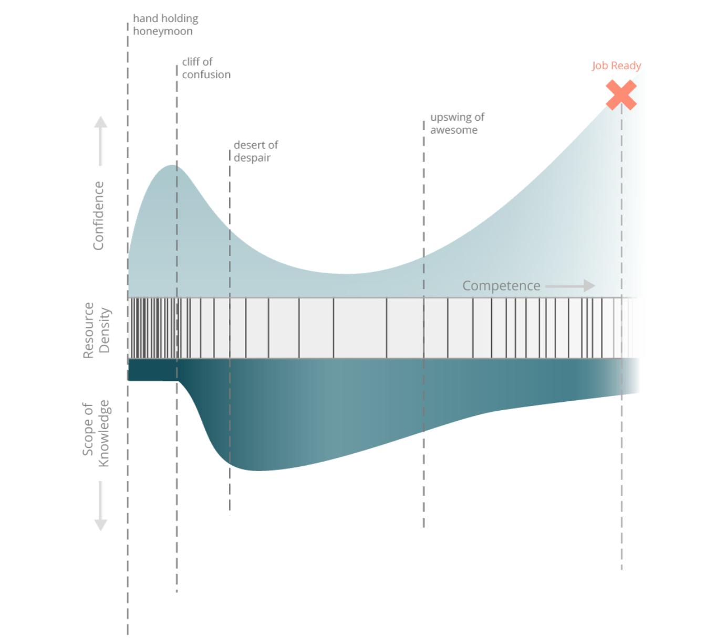

Welcome!
Welcome to my blog! Here I’ll be posting regular updates about the Awesome Inc Web Dev Bootcamp. This first post covers Prework Week 1, but is being written torwards the end of week 2 — as we had to learn some basic HTML /CSS in order to create a blog post to begin with!
First Week of Prework
Our first week started with a meet up at Awesome Inc. We got a chance to meet our fellow bootcampers
(there are 11 of us!), as well as meet our 3 instructors: Justin,
Ian, and
Josh.

The Learning Curve
My favorite takeaway from our initial meet up was this cool graphic on the stages of learning:

I’ve been pretty interested recently in how people learn. I read (ok skimmed) Malcolm Gladwell’s
“Outliers”
a few months ago, and have been working my way through the public library’s collection of Cal Newport
(
“So Good They Can’t Ignore You” is an awesome take on learning new skills;
“Digital Minimalism”
caused me to delete all social media from my phone and disable it’s internet browser). I’d seen images of learning
curves, and read various theories about the path someone takes when learning a new skill, but had never stumbled
across something that broke it down like this graphic did.
The graphic itself has 3 sections: confidence, resource density, and scope of knowledge. As you progress left to right, you go through various stages for each, while staidly increasing you competency. What I liked most about this was the confidence meter and the resource density.
I think that anyone who has tried to learn a new skill has likely experience that initial boost in confidence.
You start learning a new skill and (because you started at zero) you progress very quickly. You’re flying through
this plethora of beginners resources and climbing the learning curve so rapidly that you’re convinced that
this time next week you’ll be working for Google.
Then you crest that initial hill.
When you started, you didn’t know enough to know what you didn’t know. As such, you felt like it would be pretty
simple to acquire all the information you would need. Now (after a few weeks of rapid learning), you finally know
enough about whatever skill you are learning, to realize just how much you have left to learn. Your small pond
turned out to be a big ocean. And that’s what the confidence drop comes from — correspondingly, it’s also likely
that this is where most newcomers flame out.
To add to the blow that this drop in confidence delivers, the graphic also shows a rapid increase in resource
scarcity. My own thoughts on this are that there are two markets for those who create such resources:
- Beginners
- Experts (Paid Professionals)
In most fields, there are likely way more people in the beginning market that at any other junction.
So, despite the fact that beginners likely aren’t making money yet off of whatever skill they are learning
(and therefore don’t have much money to invest in learning resources), the sheer size of this market makes
it appealing for resource creators to create content.
At the other end of the spectrum, experts likely represent a small percentage, but since they are paid for
the work that they do, they can afford to pay a premium for advanced level knowledge resources. This leaves
a small market for those skill-learners who are beyond the scope of the beginner resource but below the level
of the expert resource.
This creates this “desert of despair”, as the graphic calls it, where your confidence is knocked down
several pegs AND those learning resources that helped you advance so quickly early on are becoming scarcer
and scarcer.
This learning curve graphic goes on to point out that:
- Despite this feeling of hopelessness, others before us have been through the same thing. The graphic encourages us to keep pushing.
- Despite the fluctuations in confidence and resources, your competencey is steadily increasing throughout your journey.
Note: I didn’t mention the 3rd category, scope of knowledge — that’s basically showing how a beginner
absorbs broad fundamentals early on before specializing (and decreasing total breadth of knowledge) later on.
~phew~ sorry for the big rant on learning curves — on to the meat and potatoes of prework week 1.